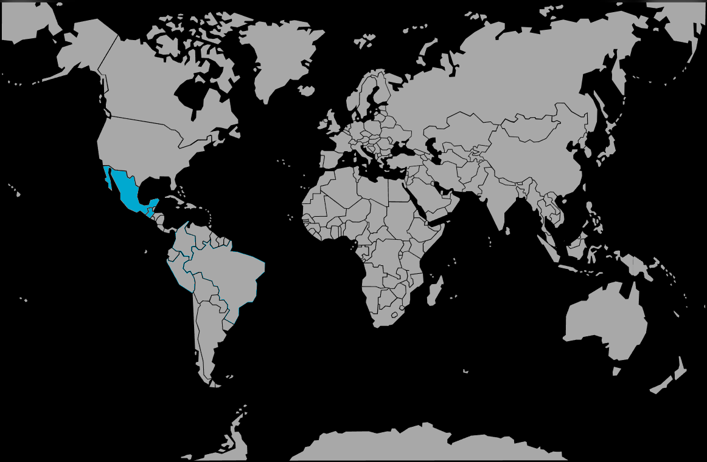

Systématique
- Ordre : Cyprinodontiformes
- Famille : Poeciliidae
- Genre : Poecilia
- Espèce : Poecilia mexicana
Poecilia mexicana est une espèce de molly sauvage originaire du Mexique et d’Amérique centrale, adaptée aussi bien aux eaux douces qu’à des milieux légèrement saumâtres.
Les adultes mesurent généralement entre 6 et 10 cm, les femelles étant plus grandes et plus trapues que les mâles.
L’espèce est vive et grégaire, occupant surtout les zones médianes et superficielles du bac, où elle nage en groupe et explore en permanence la colonne d’eau.
Les mâles peuvent se montrer insistants envers les femelles, ce qui impose un harem avec une nette majorité de femelles et un décor offrant de nombreuses zones de repli.
Mode : vivipare ; les femelles mettent au monde des alevins déjà formés après une gestation de quelques semaines, souvent de façon répétée tout au long de l’année.
Les jeunes sont rapidement autonomes mais restent vulnérables à la prédation, d’où l’importance d’un bac bien planté avec des cachettes de végétation fine pour maximiser leur survie.
Dimorphisme sexuel : mâle plus petit, doté d’un gonopodium et souvent de nageoires plus développées ; femelle plus grande, avec abdomen volumineux et forme générale plus massive.
Espérance de vie : en moyenne 3 à 5 ans en aquarium, avec une eau dure, bien oxygénée et une alimentation riche en végétaux.
L’espèce colonise rivières côtières, lagunes et estuaires faiblement saumâtres, dans des eaux bien éclairées, riches en végétation aquatique et à courant variable.
Répartition
Origine naturelle :
- Amérique du Nord au sens biogéographique, principalement le Mexique.
- Rivières côtières, zones estuariennes et lagunes du Golfe du Mexique.
L’espèce se rencontre dans des eaux à salinité variable, bénéficiant d’une bonne luminosité et d’une végétation aquatique abondante.
Paramètres de maintenance
Température : 22 à 28 °C.
pH : 7,0 à 8,2.
GH : 10 à 25 °dGH, eau dure à très dure, avec possibilité d’ajout de sel non iodé pour reproduire un milieu légèrement saumâtre.
Courant : faible à modéré, avec une bonne filtration et une bonne oxygénation.
Volume conseillé : à partir de 120 L pour un groupe, idéalement en harem (un mâle pour plusieurs femelles).
Régime alimentaire
Régime : omnivore à forte tendance herbivore ; accepte aliments secs pour vivipares, spiruline, légumes pochés, complétés par de petites proies vivantes ou congelées.
Une part végétale importante dans la ration limite les problèmes digestifs, soutient la reproduction et favorise des couleurs naturelles soutenues.